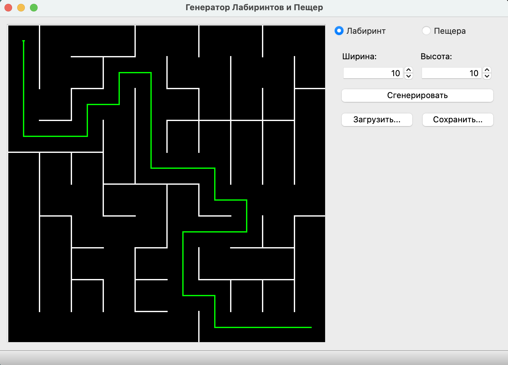
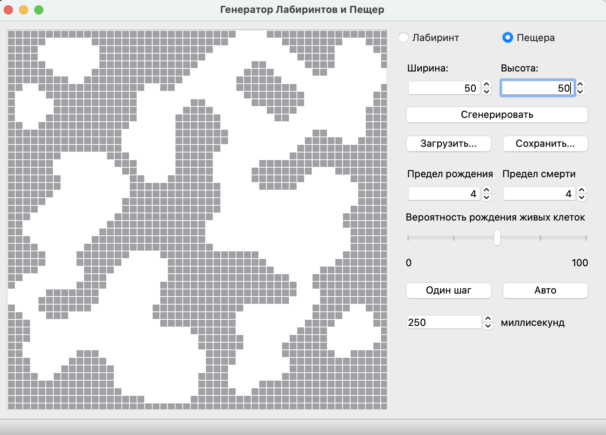

Проект разработан на C++17 и использованием фреймворка Qt.
Программа может работать в двух режимах:
Каждый из этих режимов обладает собственными элементами управления, подробнее об этом ниже

Генерация лабиринтов построена на алгоритме Эллера. Подробнее об этом в статье на Хабре
В режиме лабиринта интерфейс позволяет создавать лабиринт по заданным размерам, а так же загружать и сохранять результаты генерации в файл с расширением *.maze
Маршрут можно построить простым нажатием мыши на две точки, между которыми пользователь хочет найти путь
Размер генерируемого лабиринта не может превышать 50x50

Генерация пещер основана на алгоритме клеточного автомата. Интерфейс позволяет установить предел рождения (сколько окружающих точек должно быть "живыми", чтобы "мертвая" клетка ожила) и предел смерти (сколько окружающих клеток должно быть "живых", чтобы "живая" клетка не умерла). Так же можно установить вероятность появления "живой" или "мертвой" клетки при генерации.
Этапами генерации можно управлять в двух режимах - пошагово вручную или атвоматически, делая шаги через заданный промежуток времени в миллисекундах. В автоматическом режиме генерация прекратится, когда карта пещер придет к устойчивому состоянию.
Размер генерируемой карты пещер не может превышать 50x50
© Проект является результатом работы, выполненной Никитой Романовским (wsulu), Александром Потянихиным (jmadie) и Святославом Гусевым (sshunpik) по учебному заданию Школы 21.